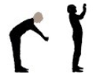
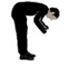
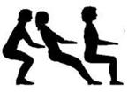
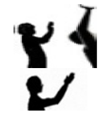
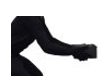
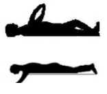
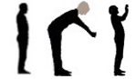
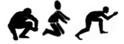

گام دوم: تعیین امتیاز برای سایر شاخصها
A - تعیین امتیاز بار وارده به کمر
| تصویر | پوسچر بدن هنگام کار بدون یا با اعمال نیروی کم | مدت زمان به عنوان بخشی از فعالیت فرعی | امتیازها | |||
|---|---|---|---|---|---|---|
| تا ¼ گهگاهی | تا ½ مکرر | تا ¾ غالباً | ¾< دائماً | |||

|
پوسچر ایستاده با کمر صاف در حالت ایستاده، چمباتمه یا زانو زدن، که ممکن است با چند قدم راه رفتن یا حرکات بدن (تنه میتواند تا 20 درجه به جلو خم شود) همراه باشد؛ مانند کارکنان فروش و اپراتورهای ماشینآلات. | 2 | 4 | 6 | 8 | — |
|  | خمش تنه به جلو با زاویه متوسط (بین 20 تا 60 درجه) در حالت ایستاده، چمباتمه یا زانو زدن، یا خم شدن به عقب؛ مانند کارگران خطوط مرتبسازی محصولات غذایی. | 7 | 15 | 22 | 30 | — |
|  | خمش شدید تنه به جلو (بیشتر از 60 درجه) در حالت ایستاده، چمباتمه یا زانو زده؛ مثلا هنگام بستن میلگرد در کار ساختمانی | 10 | 20 | 30 | 40 | — |
| نشستن در پوسچرهای اجباری، خمش تنه به جلو به طور متوسط تا شدید، معمولا با نگاه مداوم به یک نقطه؛ مانند کار با میکروسکوپ، هدایت جرثقیلها، آندوسکوپی (پزشکی)، همچنین نشستن کف زمین. | 3 | 6 | 9 | 12 | — | |
|  |
نشستن در یک پوسچر متغیر مانند کار اداری
|
2 | 4 | 6 | 8 | — |
| جمع امتیازهای بخش A | — | |||||
امتیاز بار وارده به کمر (A): —
لطفا توجه داشته باشید: برای پوسچرهای دست/بازو، در صورت لزوم، بخش B را نیز تکمیل کنید! اگر کار در حالت چمباتمه و زانو زده انجام شود، بخش C نیز باید تکمیل شود!
B - تعیین امتیاز بار وارده به شانهها و بازوها
| تصویر | هنگام کار بدون یا با اعمال نیروی کم | مدت زمان به عنوان بخشی از فعالیت فرعی | امتیازها | |||
|---|---|---|---|---|---|---|
| تا ¼ | تا ½ | تا ¾ | ¾< | |||
|  | بازوها بالا، دستها بالای سطح شانه در حالت ایستاده، چمباتمه یا زانو زدن؛ مانند نصب دیوار خشک، دکوراسیون داخلی، برقکاری، نصب سیستمهای تهویه، مونتاژ دستی، تعمیر و نگهداری | 10 | 20 | 30 | 40 | — |
|  | بازوها بالا، دستها پایینتر از سطح شانه یا دور از بدن در حالت ایستاده، چمباتمه یا زانو زدن بدون اینکه بازوها پشتیبانی شوند؛ مانند فعالیتهای مرتبسازی در خط تولید | 6 | 12 | 18 | 24 | — |
|  |
به پشت دراز کشیده، بازوها بالای سر، مانند نقاشی سقف، کار مونتاژ، کف دو جداره کشتی، ساخت مخزن به شکم دراز کشیده، بازوها جلوی / زیر بدن، مانند تعمیر ماشین |
7 | 14 | 21 | 28 | — |
| زمان باقیمانده | بدون بار وارده به شانهها/بازوها | 0 | — | |||
| جمع امتیازهای بخش B | — | |||||
امتیاز بار وارده به شانهها و بازوها (B): —
لطفا توجه داشته باشید: اگر بار فیزیکی به دست/بازو وارد شود، فعالیت فرعی بایستی با استفاده از روش KIM-MHO نیز ارزیابی شود.
C - تعیین امتیاز بار وارده به زانوها/پاها
| تصویر | هنگام کار بدون اعمال نیرو یا با اعمال نیروی کم | مدت زمان به عنوان بخشی از فعالیت فرعی | امتیازها | |||
|---|---|---|---|---|---|---|
| تا ¼ | تا ½ | تا ¾ | ¾< | |||
|  | ایستادن مداوم، همراه با چند قدم راه رفتن، مانند کارکنان فروش، اپراتورهای ماشینآلات | 2 | 4 | 6 | 8 | — |
|  | چمباتمه زدن، زانو زدن یا نشستن چهارزانو، مانند نصب دیوار خشک، دکوراسیون داخلی، برقکاری، لوله کشی، جوشکاری دستی، برداشت محصولات، نصب کفپوش/کاشی، سنگفرش، مونتاژ دستی و تعمیر و نگهداری | 10 | 20 | 30 | 40 | — |
| زمان باقیمانده | بدون بار وارده به زانوها/پاها | 0 | — | |||
| جمع امتیازهای بخش C | — | |||||
امتیاز بار وارده به زانوها/پاها (C): —
لطفا توجه داشته باشید: اگر بار فیزیکی به زانوها/پاها وارد شود، فعالیت فرعی بایستی با استفاده از روش KIM-MHO نیز ارزیابی شود.